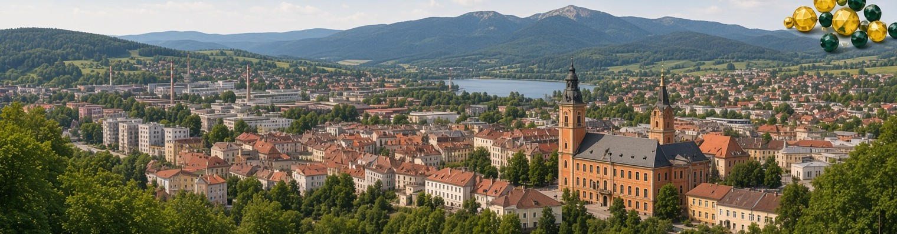
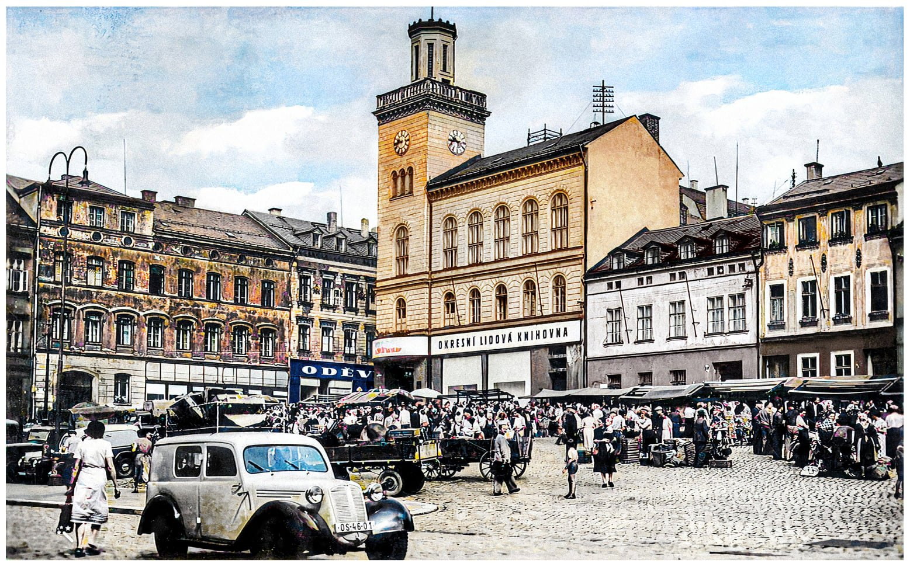
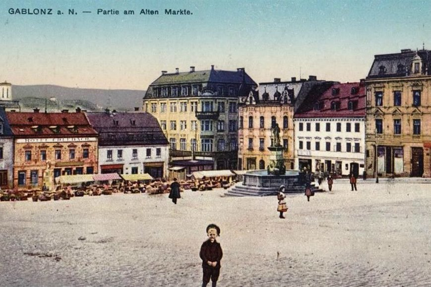
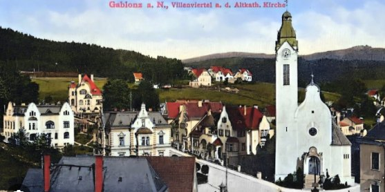
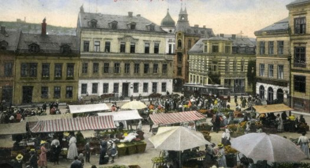

Bananas for beading





Visit the birthplace of Czech beads.
Beading holidays in Jablonec nad Nisou with an English and Czech couple.
Day trips to 9-day tours, small groups or larger — we are very flexible.